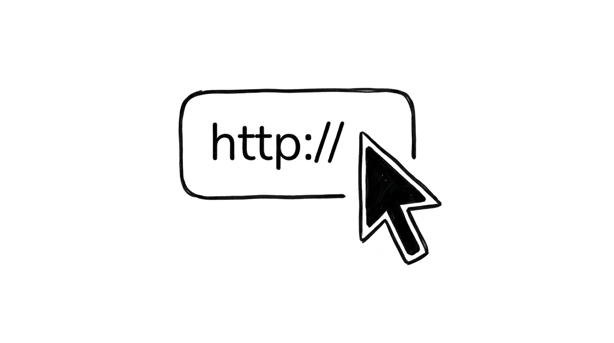
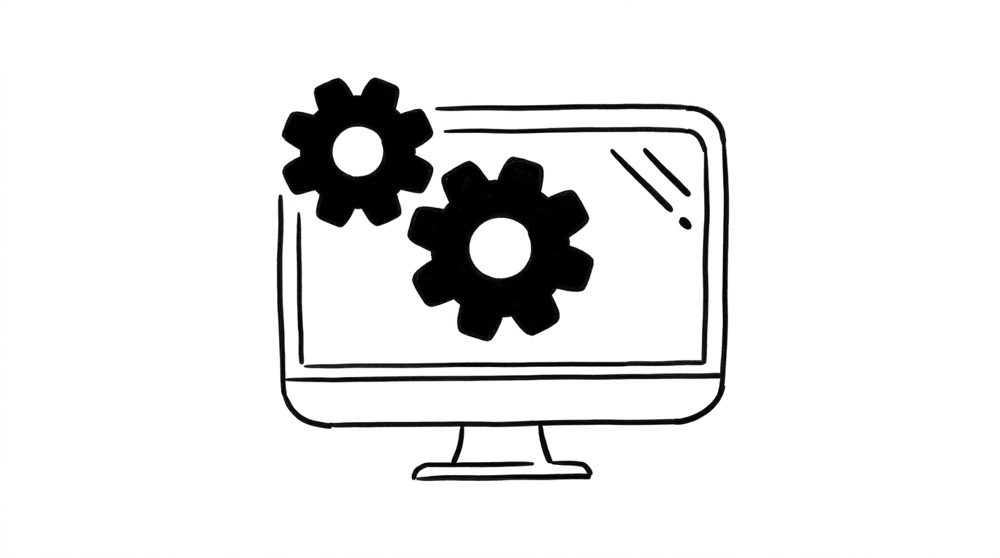
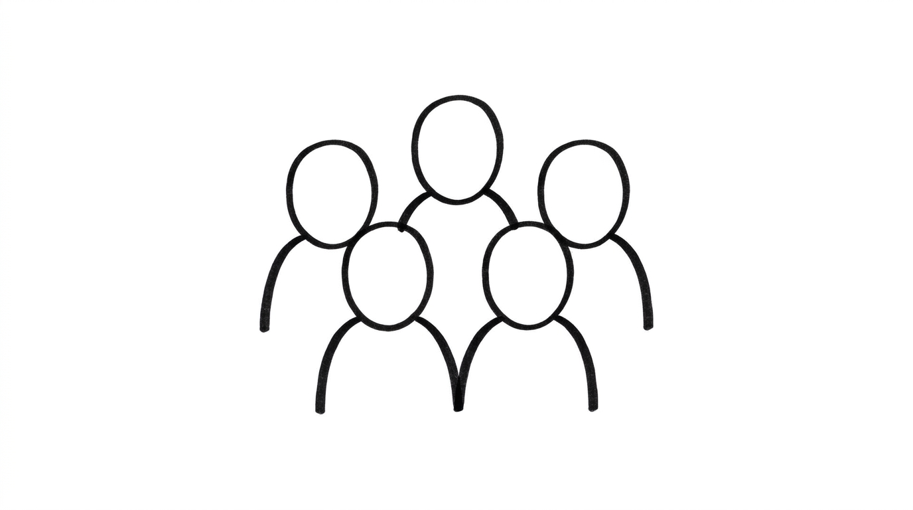
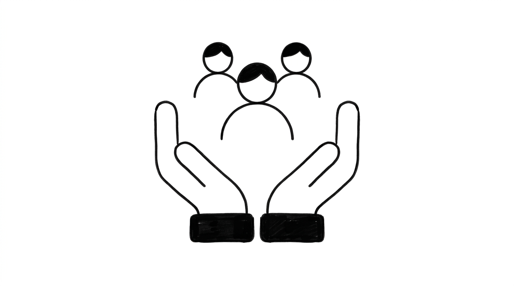

SELECTED WORK
My Work & What I'm Building
I'm just starting out,but here's what I'm working on,building my skills in computers, problem-solving, and helping people



Have a project
in mind?
in mind?